1你带的零食总被别的同事 吃掉，你会怎么做？
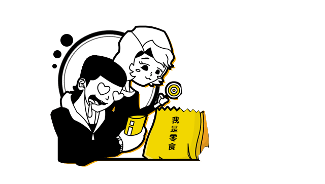
A你整个人都是公司的，何况零食？
B宁为零食碎，干脆不吃
C我的零食我做主，一道锁解决蹭吃的
D链接给你，自己买去
下一题
2说领导坏话的时候，领导 正从背后走过，你会怎么 办？
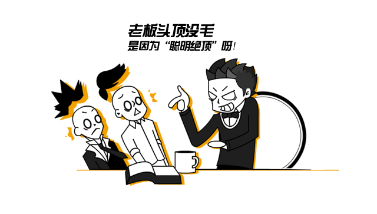
A继续大声聊，就是让你听到
B表面淡定，立马闪人
C推翻综上所述，表达对领导的拥护
D打岔神功，给领导汇报工作，转移注意力
下一题
3你的拖延症还可以抢救一下吗？
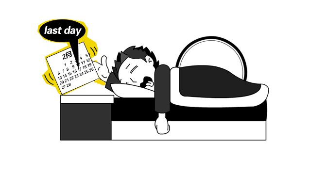
A二十个闹钟响，可能三十个才会起床
B明天的工作，今天绝对不可能完成
C什么叫拖延症？哎，好烦，明天再回答
D没有拖延症，总被别人拖
下一题
4部门划分小团体，你怎么办？
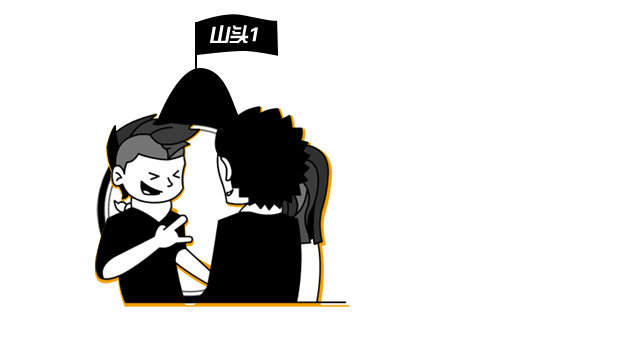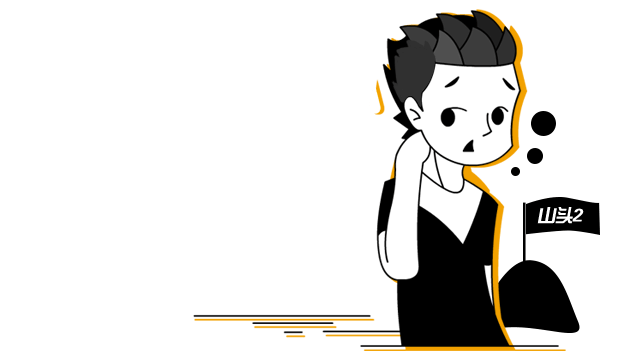
A看好山头，哪里好爬往哪爬
B我就是山，到哪都是灵魂人物
C啊？山头是啥？我还是干我的活儿吧
D抱什么山头都不如抱老板大腿
下一题
5想过跳槽吗？
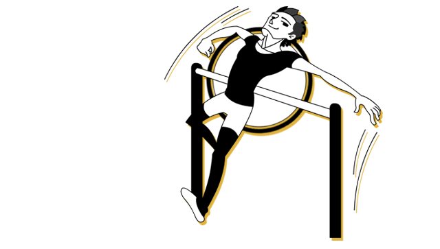
A只吐过槽，没跳过
B不跳槽哪来的高薪?定期跳槽有益身心
C体重和能力成反比，跳不出去
D如果跳槽上奥运，我能拿冠军
下一题
6老板讲了一个不好笑的笑 话你会怎么样？
A老板讲的笑话怎么可能不好笑
B假装没听到
C发出让人捉摸不透的冷笑看着老板
D讲一个更不好笑的
下一题
7你会用什么软件进行职场 社交沟通？
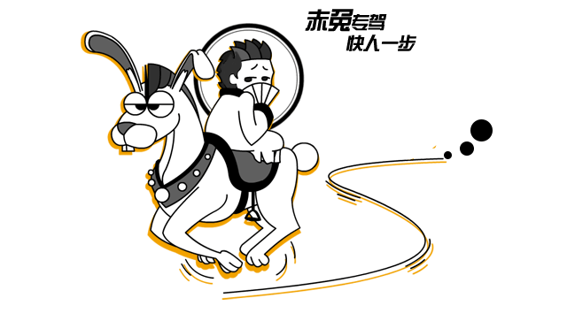
A赤兔APP
B赤马APP
C赤猴APP
D赤兔马APP
下一题
8遇到猪队友，怎么破？
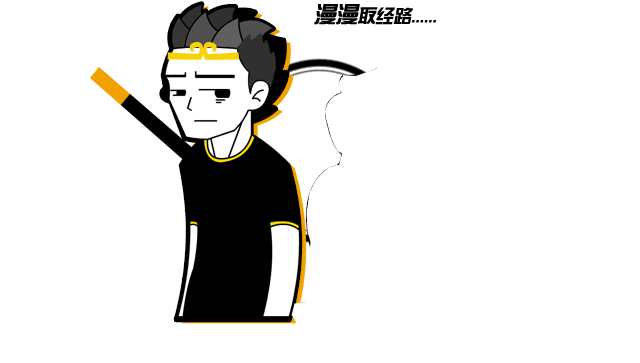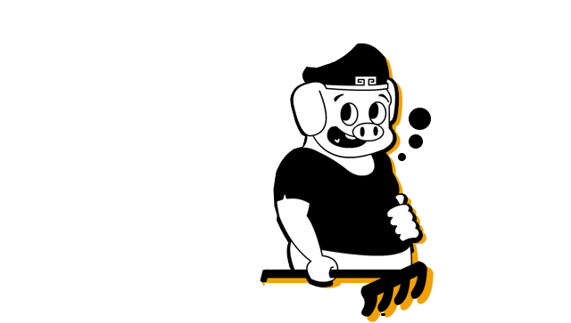
A给猪擦屁股，擦擦更健康
B向领导汇报，踢出猪队友，保持队伍精英血统
C万事皆用“关你屁事”和“关我屁事”
D团结一心，猪也能飞
下一题
9职场拼杀不可空手，以 下哪种场景和你最像？
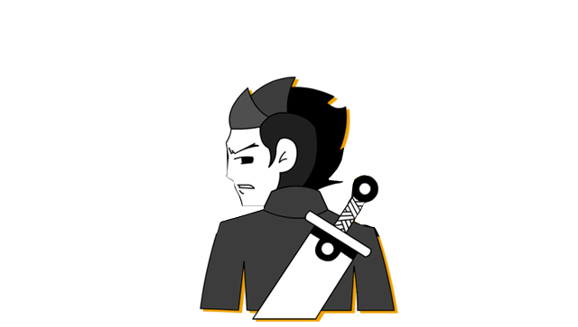
A超薄笔记本随身，攻可冲锋守可坐镇
B手握顶配工作站打遍天下无敌手
C台式机+多联屏显示器,摆开阵势才彰显气势
D笔记本平板手机不能少,利器在手天下我有
下一题
10如果用IT设备来形容你，以下哪种和你最像？
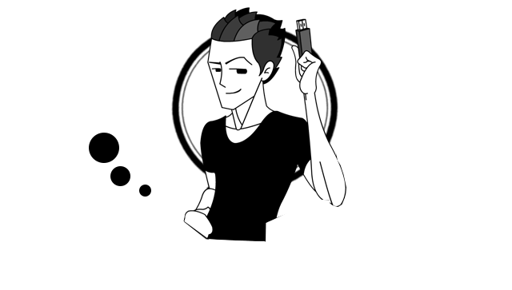
A万能U盘，肚里有料，插哪儿哪儿灵
B超级服务器，坐镇军中，决胜千里
C轻创本，独当一面，一个人就能打下一片江山
D显示器，不声不响，却不可替代
下一题